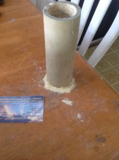

Posted on: February 20th, 2014

Snow Experience
Bamboo Snow actually forms and falls from the shaft of a bamboo culm. These two photos show the amount of snow that accumulates in just a few hours.
On the left is a small section of bamboo that has tiny buds of snow on the surface. These fall down to create the ridge at the base of the cutting. On the right is the same section only four hours later. Note that the inner ridge has grown and is actually higher than the original accumulation.
It really does fall just like snow: golden tan and highly desiccated, ready to absorb oils, grease and water.
In the last few days, my savings have mounted up so that I have been able to buy a couple of items that I''ve wanted for months. I am constantly trying to figure out what the properties of this stuff are: So far it has been totally 100% benign, but very interesting.
I have wondered about how well the snow acts as an insulator, and how fast does it dry out. That kind of thing. So I bought a toaster oven for about $45. It works and has a temperature control -- Likely not accurate, but I''ll live with that.
When I drop some water on virgin bamboo snow, it tends to form clumps. The size of a small pea: approximately the same size as the drop.
Bamboo Peas In a Bowl
Putting this into a warm (less than boiling) oven for about 60 minutes dried out all the lumps. They remained quite hard, like clumps of chalk. Unlike chalk, these clumps actually repelled water, and were very slow to wet.
However, these same clumps had great affinity for oil. Virgin bamboo snow will absorb both water and oil instantly, but re-dried snow will avoid water and absorb oil. Bamboo Snow is a flame retardant, and might be useful on oil fires because of this.
The strength of the clumps is interesting, too. The water in Saipan is very full of minerals, mostly calcium, but there is lots of volcanic bedrock here too. These minerals are certainly left behind when I dry out a specimin. The snow itself is full of minerals: lots of silicon in the structure of the snow. In fact, the snow is the stripped silicon skeleton of the bamboo fibers. Bamboo Snow, while not an adhesive material, seems to aid in the cementing of the clumps. That''s the definition of pozzolonic -- A region of Italy abundant in minerals essential to construction for the old roman empire.
So, to recap:
- It dries out easily over 200 degrees, much less so under 200 (Follow on question -- how good an insulator is Virgin Bamboo Snow?)
- Water Saturated clumps retain their shape, and when dried will repel water through high internal surface tension. Very slow to wet.
- The same re-dried clumps will instantly absorb oils, much the same as virgin Bamboo Snow
I love my little explorations into Golden Bamboo Snow. Fun like kindergarten. like Concrete5 or even concrete5.
blog comments powered by Disqus© 2018 bamboo can do cooperative.